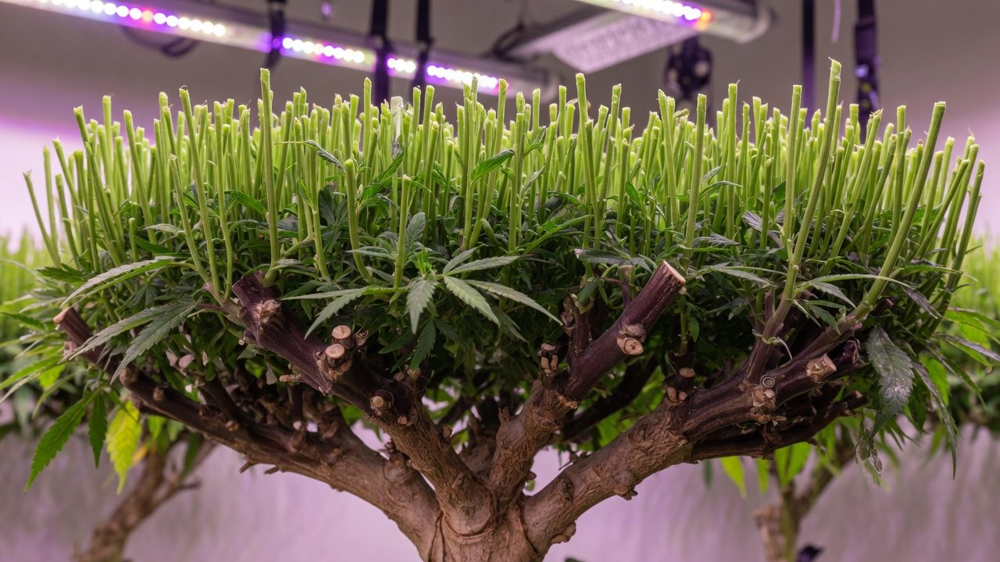
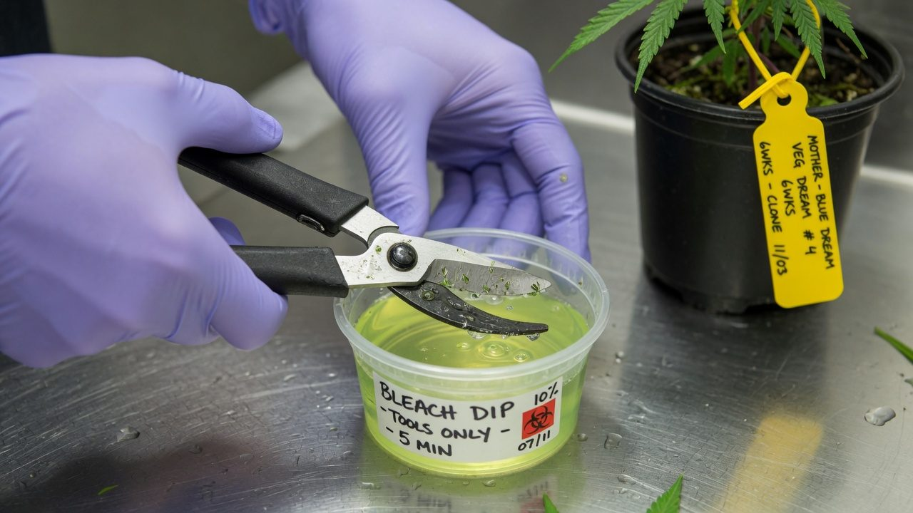
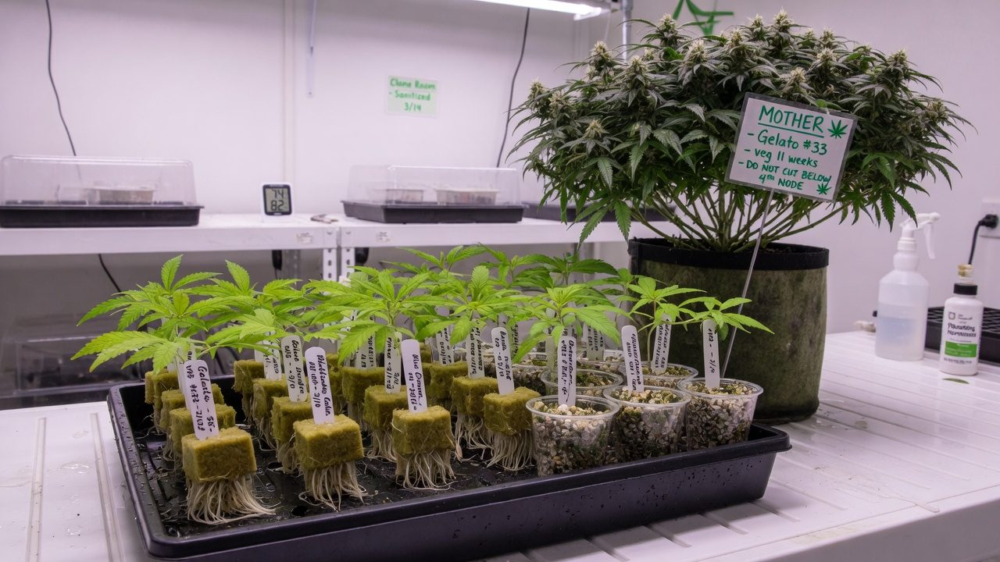

Mother plants: environment, feed, pruning and protection against pathogens
This paper gives information about the environment, feed, pruning, protection against viroid, tests and replacement of plants in a cannabis mother bank. After you read this paper, you will know how to prepare a mother room and schedule the cuttings. You will also know how to prevent an infection of your stock with hop latent viroid.
Purpose and scope
A mother plant is a plant that you keep permanently in vegetative growth (growth of leaves). The plant does not make flowers. The only task of the plant is to supply cuttings at the correct times. A cutting is a copy of the mother plant and has the same genetics. Each plant that goes into your flower room started as a piece of a mother plant.
The name in horticulture is stock plant. Growers use the name mother plant. For a mother plant or a stock plant, you keep one plant out of production. You use light, space and work for this plant. As a result, all the plants of a batch are the same. You know the genetics of the plants, and the plants are available on time.
All the mother plants of a facility are the mother bank.
The mother plant is upstream of all other plants. Thus it is important to do the work with mother plants correctly. If a mother plant is weak, has a disease or has an incorrect label, the problem is not in one plant only. The problem is in each cutting that the mother plant supplies.
Usually you find the problem after some weeks or months. At that time, the problem is in all the plants of a room. A problem in a mother plant is small and has no signs at first. When you can see the problem, the damage can be very large.
This paper is for growers who keep a first mother plant and for operators of a stock room who schedule production. The paper is about the plant that you cut from. The cloning paper gives information about the cutting method (blades, gel, domes and humidity). The IPM hygiene paper shows how to keep the room clean.
Definitions
The terms for a mother room are from horticulture, virology and production control. This section gives the definitions of eight terms. The paper gives the definition of each other term where the term first occurs.
Evidence and limitations
We want each paper to be correct. Thus we examine each paper for information that is not solid. This information comes from the view of one grower, from a small number of sources, or from grower methods that have no controlled test. We identify this information, and we do not show it as solid.
Frequently there is no paper for the decision that you must make. Then we use the reports of other growers and the methods that work in the rooms that we know. This information can help you, but it is not the result of a laboratory test. Use the methods that work for your plants, for your room and for your meters. If a table does not agree with your crop, use the data from your crop and record the difference.
- The primary definitions and the units of measurement in the paper
- Safety limits that have a citation to a regulation or a specification
- Target ranges for light, climate and feed in each stage. They are start values that you can change.
- SOPs that work in many rooms, but you must adjust them for your genetics and meters
- A number for yield or potency that you will always get, with no test at many sites
- Controller setpoints from a different facility, with no new calibration
If you find an error, make a report. We will correct it. Make the report on GitHub, with the name of the paper and the information that is incorrect. If you have a source, include it: Make a report of an accuracy problem. The regulations, labels and licenses of your area always override each procedure in these papers. The label weak in a paper shows the points where the risk of an error is highest.
Mother-plant procedures in one table
The table below shows each procedure that is important for a mother bank with a constant supply of cuttings. Sections 04 to 16 give the data and more information for each row.
These five procedures are the most important:
- Make the photoperiod longer than the photoperiod at which flowers start. Tests show that cultivars start to make flowers at photoperiods as long as 14 h, and some cultivars start at 15 h[1]. The 18/6 photoperiod lets the mother plants stay in vegetative growth when there is a timer fault or a light leak.
- Give feed for rigid shoots, not for large dark green leaves. The target is rigid regrowth with thick stems. A plant with too much feed has dark green leaves that hang from the stems. The cuttings of this plant show wilt and stop growth.
- Make the frame one time, then harvest the regrowth. The shape of the plant has more effect on the number of cuttings than the feed or the light.
- Think that hop latent viroid can infect your stock. In a report on California facilities, approximately 90% of the facilities had the viroid[11]. Use a correct procedure for blades. Do tests at regular intervals. These two procedures are the complete protection.
- Replace because of data, and use an overlap. Keep the replacement plant together with the mother plant that you replace. Do not discard the mother plant that you replace before the data show that the replacement plant is satisfactory.
Keep a plant with known genetics and a clean test result in permanent vegetative growth. The plant must supply a constant quantity of cuttings each week. Make sure that you always know the correct condition of the plant.
Mother-room environment
The photoperiod is the most important control in a mother room. Photoperiod cannabis starts to make flowers when the period of darkness is sufficiently long. The threshold photoperiod is longer than most growers think.
In a test with six photoperiods, all the cultivars started to make flowers at photoperiods as long as 14 h. Some cultivars started at 15 h[1]. The 18 h photoperiod has no special value. It is 3 to 4 h longer than the longest photoperiod at which the plants start to make flowers.
If a mother plant starts to make flowers, the result is a large problem. The change back to vegetative growth is slow. It is a waste of some weeks. The regrowth has a twisted shape. Cuttings that you cut while the plant changes to the flowering stage make roots irregularly and increase in size irregularly.
Photoperiod faults in mother rooms are accidental. There are three causes. A timer output does not operate. A contactor stays in the off position. Light comes through a door from a flower room next to the mother room.
Do a check of the period of darkness each month. Stay in the room for five minutes with the lights off. Repair each light leak that you can see.
Two photoperiods are in frequent use in mother rooms: 18/6 and 24/0 (continuous light). The first number is the hours of light, and the second number is the hours of darkness. The two photoperiods keep photoperiod cultivars in vegetative growth. Continuous light uses approximately one third more energy.
Some growers think that a period of darkness is good for root growth and for the condition of the plant after the harvest of cuttings. The data are weak. They do not show that a period of darkness helps or does not help. Thus the data do not show a fact, and you can select one of the two photoperiods. The 18/6 photoperiod is the usual selection because it is sufficient and it uses less energy.
There is one important limit: you cannot use autoflower genetics for mother plants. Autoflower plants start to make flowers because of their age, not because of the photoperiod. No photoperiod can stop this effect.
Use a moderate PPFD for a mother plant, not the PPFD of a flower room. Vegetative cannabis can use much more light. In a test with PPFD values from 135 to 1430 µmol, the growth continued to increase when the light increased. But light also changes the shape of the plant. When the light intensity increases, the length of the internodes and the size of the leaves decrease gradually[4].
If you use more than 900 µmol for a mother plant, the regrowth is short and thick, and the internodes are short. A plant with short internodes is good for production. But it is not easy to cut shoots of 8–15 cm (3–6 in) from this plant.
If you use less than approximately 150 µmol, the shoots are thin and weak, and they have long internodes. These shoots have a low quantity of carbohydrate and a low rooting rate. A PPFD of 300 to 500 µmol is the correct range. In this range, the regrowth is fast and has the correct shape for cuttings.
The climate in a mother room is usual. The values are grower methods. When the lights are on, use approximately 22 to 26 °C (72 to 79 °F). Use approximately 55 to 70% relative humidity. Use a small, continuous movement of the air.
The mother room must be the most stable room in the facility. Stress in the mother room causes a batch of cuttings with a rooting rate of 60% and not 90%. The effect occurs after two weeks. It is not easy to find the connection between the stress and the rooting rate.
Mother-plant nutrition
The nutrition of a mother plant has a different target from the nutrition of a flower plant. The target is not buds, and it is not a large plant. The target is stems and growing tips. The plant makes them continuously from the same root system for months. Thus use a feed for vegetative growth with a high nitrogen content and a moderate strength.
A test gives data for the nitrogen value. The test used five doses of nitrogen on medical cannabis with long days. The optimum for vegetative growth was 160 mg/L N. At 30 mg/L N, the plants had a large nitrogen deficiency, stayed small and became yellow. At 240 to 320 mg/L N, the growth decreased, and the plants were smaller and dark green. The plants showed typical signs of too much nitrogen[2].
More nitrogen does not make more shoots. The growth is at a maximum at a nitrogen value that is less than the value in most feed charts.
The primary limit for the rooting of a cutting is carbohydrate, not nitrogen. A test of stock plants showed that the quantity of carbohydrate in the cutting is the primary limit for rooting. Nitrogen is a secondary limit[5].
A mother plant with too much feed makes soft shoots that contain much water and are dark green. The leaves are large and hang from the stems, and the stems have a hole in the middle. These cuttings show wilt in the dome and make roots only after a long time, or do not make roots. The correct regrowth is rigid and thick. The plant can show a small deficiency of feed.
| Item | Range for use | Source |
|---|---|---|
| Nitrogen | 150–200 mg/L, with the middle at approximately 160 | Optimum from a test with different doses[2] |
| Feed EC | 1.4–2.0 mS/cm | Grower method. Monitor the plant, not the chart. |
| pH | 5.8–6.2 (coco / rockwool) | Grower method |
| Irrigation | Stable, small drybacks. No cycles of drought. | Stress at this time causes a low rooting rate after 2 weeks |
| The day before a harvest | Apply sufficient water. Do not apply foliar sprays. | Shoots that are full of water and have dry leaves are easy to use and have the highest rooting rate. |
The correct feedback for the mother plant is the rooting rate of its cuttings, batch after batch. If the rooting rate decreases in two or three batches, and pests and viroid are not the cause, examine the feed first. The correction is usually less: less N, less EC, and more rigid shoots.

Shape and regrowth of the mother plant
The shape of the plant has more effect on the number of cuttings than the vigor of the plant. A mother plant with no pruning makes one top shoot that is much larger than the side shoots. It also makes a small number of weak side shoots. This shape gives a low number of cuttings. Growers of fruit and hedge plants use the same method. They remove the top shoot in the first weeks, make the plant wide, and keep the plant flat.
The top shoot makes a hormone. The hormone flows down in the stem and prevents the growth of each side shoot below it. This effect is apical dominance: the top bud controls the growth of each node below it. When you cut the top of the shoot (topping), the quantity of hormone decreases. Then each side shoot that is below the top starts to increase in size at the same time.
Cut the top of the young plant one time. Then cut the top of each side shoot that starts to increase in size one time. As a result, you change one growing point into eight to twelve growing points. These growing points become the permanent frame. All the shoots above the frame are crop.
- 1Start (weeks 0–2)Start with your best clone that has a clean test result. The mother plant has all the properties of the clone, good and bad. Transplant the clone. Give the clone time to make roots in the new substrate.
- 2First topping (week 2–3)Cut the top of the plant above node 4 or node 5. As a result, the plant makes 4 to 6 strong side shoots.
- 3Make the scaffolds (weeks 3–5)Select the best 4 to 6 side shoots as permanent scaffolds. Cut the top of each scaffold one time. Then each scaffold divides into two branches. Remove the other side shoots.
- 4Open the middle (continuous)Remove the weak shoots that point to the middle of the plant. Then the middle of the plant receives light and air. A middle that is in shade makes thin, long shoots, and these shoots have the lowest rooting rate.
- 5First harvest (week 5–6)The tips that you remove in the pruning are your first cuttings. After the first harvest, the plant is in production.
Procedures for the harvest keep the supply of cuttings stable. Cut each shoot above its first node. Then the stub makes two shoots, and the canopy has more shoots at each harvest.
Harvest a maximum of approximately half of the canopy at one time. Keep leaves on each scaffold. A scaffold with no leaves stops growth and does not make new shoots. The regrowth cycle between full harvests is usually 2 to 3 weeks (grower method).
The shoot that you cut must be a good cutting. A test of propagation showed that a cannabis cutting has the highest rooting rate with three or more fully expanded leaves on the cutting. The same test showed that cutting the tips of the leaves, the usual method in plant nurseries, decreased the rooting rate from 71% to 53%[6].
The test also showed that the position of the shoot on the plant has almost no effect. Cuttings from top shoots and cuttings from bottom shoots had approximately the same rooting rate[6]. Thus harvest the shoots of the canopy, not only the tips. But let the shoots increase in size until they can have three leaves of full size.
No paper gives a good number for this. The number changes with the cultivar, the size of the pot and the frame. Growers give these estimates: a small mother plant in a pot of 10–15 L (2.6–4.0 gal) gives approximately 15 to 30 cuttings in each harvest. A large mother plant for production in a pot of 30–50 L (7.9–13.2 gal) can give 50 to 100 cuttings or more.
We recommend that you use these estimates as first values and that you measure your plants. After two months, your records are better than the estimates of other growers.
Number of mother plants for production
Calculate the number of mother plants. Start at the flower room. Find the number of plants for each batch and the date when you must have each batch. Then increase the number for the plants that you do not use.
Some cuttings do not make roots. Some clones with roots are not good for the vegetative stage. Thus make 15% to 40% more cuttings than the number of plants that you must have. The cloning paper gives the same value.
| Step | Number | Information |
|---|---|---|
| Plants for the flower room | 100 | The number that the room must have |
| Discard in the vegetative stage (approximately 10%) | keep 110 | Discard the weak and slow clones at transplant |
| Rooting rate (approximately 85%) | make a minimum of 130 | 110 ÷ 0.85. The rooting rate is a correct value, not a value that a supplier gives. |
| Increase and add a buffer | make 140 | The cost of the cuttings that are more than the minimum is small. A flower room that is not full is a waste of one crop cycle. |
Then divide the number of cuttings for each batch by the output of one mother plant in each harvest. For example, a middle-size mother plant gives approximately 35 cuttings in each harvest, and you must have 140 cuttings for each batch. Thus the result is four mother plants. Use five mother plants.
The fifth mother plant is necessary. With this plant, you can remove a plant from production. You can keep a plant out of production for a time. You can put a plant in quarantine. Then you have sufficient cuttings for each batch.
Do not harvest all the mother plants at the same time. Divide the mother bank into two groups, A and B. Harvest group A, then group B, then group A again. Thus you do not harvest most of the shoots of the same mother plant two times one after the other. Each harvest stays in the limit of approximately half of the canopy.
The two groups also give you a test of the cause of a problem. If the rooting rate of the two groups decreases at the same time, it is possible that the room is the cause. If the rooting rate of only one group decreases, it is possible that the plants of that group are the cause.
A small mother bank gives more cuttings than a large number of plants with no correct procedure. The small mother bank has a correct procedure, tests at regular intervals and harvests in two groups. Each plant that you add is more work for water, pruning and tests at regular intervals[3]. Select the size of the mother bank because of the dates when the flower rooms must have plants. Do not select a larger size only for safety.
Mother-plant age and genetic stability
Some growers think that a mother plant becomes worse with time and that you must replace it each 6 to 12 months. Many operators keep the same mother plant for five years or more. They think that the plant is the same as at the start. The two groups see an effect that occurs. But the mechanisms are different.
Somatic mutation occurs. Each time that a cell divides, the cell copies the DNA, and the copy can have small errors. Each new generation of copies can have an error that the first plant did not have. In an animal, the reproductive cells stay apart from the other cells. In a plant, the reproductive cells do not stay apart from the other cells. Thus a mutation in a growing tip goes into each cutting that you cut from the tip.
A test used deep whole-genome sequencing on one cannabis plant. The test measured genetic mosaicism in the plant. The top, the middle and the bottom of the plant did not have the same genetics[7]. Reports from growers show that clonal lines have lower vigor and lower potency with time. These reports were the cause of the test[7].
But the next test changed the view. The test used 70 clones from micropropagation. The mutation load had an almost linear relation with the number of propagation cycles (r > 0.92). It did not have this relation with the age of the clones[8]. Clones of the same age had very different mutation loads, because they had different numbers of propagation cycles. Each cycle of cutting and regrowth includes many cell divisions, and the errors in the copies of the DNA occur when the cells divide.
The genome is usually not the cause when a mother plant that you keep for a long time becomes worse. The causes are usually pathogens that increase in number (refer to the next two sections). Other causes are a pot that is full of roots, a woody frame that is weak, or work procedures that change. You can do tests and corrections for each cause, and none of the causes is age.
Reports also show epigenetic change in groups of cannabis clones. Epigenetic change is a change in the expression of genes that goes to the next plants, with no change in the sequence of the DNA. The data are not sufficient. They do not show that this change causes lower vigor. Do not use epigenetic change to select the time of replacement.
Keep a mother plant when two conditions are correct. (a) The tests show clean results. (b) In your records, the rooting rate of its cuttings and the performance of the plants downstream stay stable. Replace a mother plant because of data, not because of a date. When you make a new mother plant, start with material that has a low generation number and clean test results. Do not start with material from the far end of a long sequence of clones from clones[8].
Multiplication of pathogens in mother rooms
Each organism that is in the mother room goes to each room downstream with the cuttings, at the correct time. The organisms are spider mites, root aphids, fungus gnats, powdery mildew and root-rot organisms. The mother room is the source that supplies these pests to all other rooms. Thus the work for IPM in the mother room has an effect in all other rooms (refer to the IPM SOP).
- Blades and cutting tools. Sap goes from one plant to the next plant on the tool. For the most important pathogen, this movement is the primary method of infection.
- Hands and gloves. On days when you cut, change the gloves between plants, not between rooms.
- Irrigation with one supply for many plants, or with a recirculating loop. Tests found pathogens that moved from one plant to the next plant in the nutrient solution and in the runoff[9]. Do not connect mother plants to a recirculating loop or a flood table.
- Benches, trays and watering cans. Tests found viroid RNA on the surfaces of benches and on watering cans in facilities that were in operation[9].
- The cuttings. The cuttings are the product of the room, and they move the pathogens to all other rooms.
Three procedures prevent most of the movement of pathogens from one plant to the next plant. Use dedicated tools for mother plants. Do not use these tools in other rooms. Work in the sequence of the rooms from clean to dirty: mother plants, then vegetative plants, then flower plants. Do not move in the opposite direction through a dirty room. Sanitize or replace each item that touches sap between plants, not between benches.
The next section gives information about the organism that makes these procedures necessary.

Hop latent viroid in mother stock
Hop latent viroid (HpLVd) is a bare, circular molecule of RNA with a length of approximately 256 nucleotides. It has no protein coat and no cell. Its size is a fraction of the size of a virus[9]. In 2019, a test in California first connected HpLVd with defective cannabis crops. Growers use the name dudding for the problem that HpLVd causes[10].
The plants have no symptoms in the vegetative stage. At harvest, the plants are small and weak, and they break easily. The plants have a low density of trichomes and a much lower potency.
This paper gives much information about HpLVd because the problem is large. A report from 2021 uses data from approximately 200,000 tissue tests. The report shows that approximately 90% of the cannabis facilities in California had HpLVd. In the sites that had HpLVd, approximately 30% of the plants had it[11].
Reports show that plants with dudding can have a THC content that is 50% to 70% lower[11]. An estimate of the industry gives a cost of approximately US$4 billion for each year[12]. A test of samples of flower from dispensaries in Canada found a positive result in approximately 40% of the samples[12]. This disease is frequent. It is the usual condition of stock with no tests.
The term latent shows the problem: most infected plants show no symptoms[11]. A mother plant is a very good host for the viroid. The plant stays in the room for a long time, and thus the viroid has much time to infect it. You cut the plant many times in each year, and thus the sap touches a tool at each harvest. The plant is upstream of all other plants, and thus each cutting gets the viroid.
Tests found the viroid in stock plants with no symptoms and in the cuttings with roots from these plants[9]. One infected mother plant with no symptoms supplies infected clones for months, and you cannot see the infection.
Tests measured how HpLVd moves from one plant to the next plant. The primary method is mechanical: sap and tools move the viroid[11][9]. But the viroid also moved from the roots of one plant to the roots of the next plant. This occurred when the plants had the same hydroponic nutrient solution, in a maximum of approximately two weeks. Tests also found the viroid in recirculating solution, in runoff, on the surfaces of benches and on watering cans[9].
When the viroid went into a stem that a tool cut, it went to the roots in 2 to 3 weeks and to the leaves only after 4 to 6 weeks[9]. Thus a test of a leaf can give a clean result for a plant with a new infection. Thus you must use samples of roots and do the test again (refer to the next section).
The best procedure for tools is a new blade that you use one time for one mother plant. If you cannot use a new blade for each plant, put the blade in 10% household bleach between plants[12]. In tests, bleach and hypochlorous acid broke the RNA of the viroid in sap. Quaternary ammonium compounds and most of the other sanitizers, which are weaker, did not break the RNA each time[9].
Two facts are important. No disinfectant helps a plant that has an infection. Discard an infected plant[9]. No test shows that isopropyl alcohol breaks the RNA of the viroid when it is the only treatment. Thus a flame and alcohol do not prevent infection with the viroid.
Do not think that a mother plant is clean because it looks clean. Only a test shows the difference. In tests, HpLVd moved through the plant more quickly with a 12/12 flowering photoperiod than with continuous light[9]. A mother plant with 18 h days can have a low, slow infection that is not easy to find. The symptoms occur only in the downstream plants in the flowering stage.
Tests at regular intervals for mother stock
Indexing is the procedure of clean-stock horticulture in which you do a test on each stock plant at regular intervals. Thus each clean result has a date. In cannabis, the usual test for HpLVd is RT-qPCR, which uses a small sample of tissue[12]. The cost of the test is low at this time. Thus the primary task is the interval between the tests, not the test.
Laboratories of the industry use this interval: do a test on each mother plant at an interval of 4 to 6 weeks[3]. Always do the test before a large harvest of cuttings, not after the harvest[12].
If it is possible, use a sample of root tissue. The viroid concentrates in the roots first and most equally. Thus roots are the most accurate sample[3][9]. Use material from more than one point on the plant. The concentration of the viroid is not the same in all parts of the plant. Thus one sample can give a clean result for an infected plant[3].
The entry of new plants is the primary risk for a mother bank. New genetics (a clone from a supplier or from a different grower) is the most frequent source of HpLVd in a facility.
Put each new plant in quarantine. Use a room that is apart from the mother room. If you do not have this room, use a bench that is apart from the other benches. Use tools only for this bench.
When the plant comes into the facility, do a test. Keep the plant in quarantine for 2 to 4 weeks. Before the plant touches the mother bank, do a test again.
The second test is necessary. The viroid goes to all parts of the plant only after approximately six weeks. Thus a sample from a plant with a new infection can give a clean result[12].
Keep a record for each mother plant. The record has the ID, the dates and results of the tests, the number of cuttings, and the rooting rate of each batch. The trend of the rooting rate is a continuous test that has no cost. If the rooting rate of the clones from a mother plant decreases by ten percentage points in three batches, there is a problem. The last test does not show this problem at this time.
Move the plant away from the other plants immediately. Do a test again to make sure that the result is correct. Use a new sample of roots.
Find each plant that the same tools touched after the last clean test. Do a test on each of these plants.
Discard each plant that has a positive result in the two tests. Put the plant in a bag at the bench. Seal the bag. Move the sealed bag out of the facility. Do not move infected material in the facility with no bag.
In some conditions, meristem tissue culture can make plants with no pathogen from important genetics. The average result is approximately 41% of the plants with no pathogen. The result is from 0% to 100% for different genotypes[9]. But this procedure is work in the laboratory for some months (refer to tissue culture). It is not a method to keep production stock in this cycle.

Replacement of mother plants with a constant supply of cuttings
There are five causes for the replacement of a mother plant. The first cause is a pathogen that two tests find. For this cause, replace the plant immediately. The second cause is a rooting rate that decreases in three or more batches when you find no other cause.
The third cause is a woody frame that is slow after many months of harvest. The fourth cause is a pot full of roots that more feed cannot correct. The fifth cause is the cost of the space. For each other cause, schedule the replacement. A replacement has a sequence of steps.
- 1Select the source plantCut the replacement cutting from the best scaffold of a mother plant that has clean results. You can also use your second copy that has the lowest generation number and clean results. The replacement plant gets all the properties of the source.
- 2Make the replacement plantMake roots on the cutting. Make the frame with the procedure of section 06. After approximately 6 weeks, the plant supplies a sufficient number of cuttings.
- 3Do two tests while you make the frameWhen the cutting has roots, do a qPCR test. Before the plant goes into production, do a qPCR test again. A replacement plant is not a mother plant until it has two clean results.
- 4OverlapKeep the mother plant that you replace and the replacement plant together for a minimum of one full cutting cycle. Compare the rooting rate of the cuttings of the two plants.
- 5Remove the mother plant that you replaceDiscard the plant. Put the plant in a bag. Remove the bag. Before you use the equipment of the plant (pot, tray, stakes and drippers) for a different plant, clean and sanitize it.
The overlap is a protection. Do not replace a mother plant without an overlap. If the cuttings of the replacement plant give worse results, you have the mother plant that you replace. If the replacement plant gives the same results, you can discard the other plant.
Always keep a second copy of each cultivar that is important to you. Keep it as a second mother plant in a different room, or as a culture in a tissue culture bank[13]. A cultivar with only one copy has a risk. One pot with fusarium or one positive result can cause the end of the cultivar.
Two procedures extend the life of a mother plant. Put the plant in a new pot, or do a pruning of the roots, at regular intervals. Do not wait for symptoms of a pot full of roots (grower method).
Re-mothering is the procedure in which you start a new mother plant from the best shoot of a mother plant. Re-mothering gives a new shape and a new pot. But it does not remove the pathogens or the mutations of the mother plant. The new plant has all that the mother plant has[8]. Before the new plant goes into the bank, do a test.
Clone-from-clone propagation
Some operations do not use dedicated mother plants. For each batch, they cut the cuttings from production plants. These plants are young plants in the vegetative stage. The operations cut the cuttings immediately before the plants change to the flowering stage. The cuttings make roots while the source plants go to harvest.
There is no mother room and no work for mother plants. The operation has one room more for other use. This system operates, but it has costs and it has risks.
The data show that the system operates. Retip cuttings are cuttings that growers cut from cuttings with new roots. In a test, retip cuttings made roots at a rate of 76% to 81% with no hormone. The plants gave approximately the same result as plants from stem cuttings, and the cannabinoid content did not change[14]. One generation step does not cause damage to a crop.
The problem is not one generation step. The problem is the effect of a long sequence of steps:
- More mutations. The mutation load increases with each propagation cycle[8]. In a mother bank, each batch is at generation 1. In one year of clone-from-clone propagation, there are 15 to 25 generations. Each generation has a new risk of mutation. There is no reference plant to compare with the drift.
- More pathogens. There is no plant that stays for a long time, and thus you cannot do indexing. Your stock is always two weeks from the flowering stage. Thus there is no time for quarantine and a second test. An HpLVd infection in one plant of the sequence goes to all the next generations, and you cannot see it[11].
- Selection drift. The person who cuts the cuttings selects the largest source plants and the source plants with the fastest growth. In many generations, this selection is for stretch and speed and not for quality. Many growers give reports of this effect (grower method), but no test data show it.
- No reference to start from. A mother bank can start each batch again from the reference plant. If a sequence of clones has an infection, has drift, or has an incorrect label, you cannot start it again. You cannot keep the cultivar.
The decision: clone-from-clone propagation is correct as a temporary method. Use it while you increase the size of the facility, for short crops, or for cultivars that you will stop. Do a test on each group of source plants. Do not use it as the permanent method for genetics that are important to you. Permanent use of this method causes damage slowly.
Many operators use two methods together. They use a tissue culture bank, or one small mother plant with clean test results for each keeper cultivar, as the reference[13]. They also use clone-from-clone propagation to supply the large number of plants in the time between.
Problems of mother stock
A mother bank usually stops production without a sign that you can see. There are six causes. Procedures in this paper prevent most of them.
A mother plant has latent HpLVd, and you use the same tools on many plants. Each harvest infects the next plant. No sign shows a problem until a flower room has dudding after some months. Correction: Use a blade for each plant. Do a qPCR test of a root sample at an interval of 4 to 6 weeks[3].
There is one mother plant for each cultivar. One pot with root rot, one positive result, or one tray that falls can cause the end of the genetics. Correction: Keep two copies in different rooms, or keep a culture in a tissue culture bank[13].
A mother plant has dark green leaves and too much feed. Its cuttings show wilt in the dome and show rot. The rooting of a cutting uses the carbohydrate of the cutting, not the nitrogen[5]. Correction: Use a moderate N and EC. Make rigid shoots. Monitor the rooting rate.
A mother plant stays for eighteen months in a pot of 12 L (3.2 gal). The vigor decreases slowly, and no person sees the change. Growers think that the cause is age. Correction: Put the plant in a new pot or do a pruning of the roots at regular intervals. Record the number of cuttings for each week. Then you see the change as a number.
A year of clone-from-clone propagation with no tests and no reference plant. The cultivar is not the same as before, and no person can find the cause or get the same cultivar again[8]. Correction: Keep a reference, a mother plant or a culture, for each keeper cultivar.
A grower replaces mother plants that are clean and give good results each six months, with no data. At the same time, the grower has no procedure for the hygiene of blades. Blades are the primary cause of the end of stock. Correction: Replace because of data[8]. Do tests with the work that you do not use for replacements.
Troubleshooting
Start with the symptom. Examine the possible cause. Then do the correction. Wait one batch cycle before you make a decision about the correction. In most conditions, the cuttings show a problem of the mother plant first.
| Symptom | Possible cause | Correction |
|---|---|---|
| The rooting rate decreases batch after batch, and the mother plant has no symptoms | A new HpLVd infection, soft growth because of too much feed, or a pot full of roots | First, do a qPCR test of a root sample[3]. Then examine the feed. Decrease the EC and the N. Then do a check of the pot. |
| Pistils or the first flowers on a mother plant | Photoperiod fault: a timer that does not operate, a light leak, or a photoperiod of less than approximately 15 h | Make sure that the photoperiod is 18 h. Do a check of the darkness in the room. Do not cut cuttings until the new growth has no flower structures[1] |
| The cuttings are soft and long and show wilt quickly in the dome | The feed is too high, the light is too low, the growth is soft, and the quantity of carbohydrate is low | Decrease the EC by 0.2 to 0.4. Increase the PPFD to a value of 400–500. After 1 to 2 harvests, the shoots are rigid again.[5] |
| The leaves of the mother plant are light green, the shoots are thin, and the regrowth is slow | Not sufficient N, a pot full of roots, or root disease | Increase the N to approximately 160 mg/L[2]. Examine the roots at the same time. |
| The downstream flower rooms have dudding, and the tests of leaves of the mother plants give clean results | Latent HpLVd at a concentration that a test of leaves cannot find | Do the test again with roots, with samples from more than one point on each plant[3][9]. A clean result from a leaf does not show that the plant has no HpLVd. |
| Pests come again in each batch of clones | The mother room is the source of the pests | Apply a treatment to the mother plants first. Monitor the mother plants. Before each harvest of cuttings, do an inspection. Refer to the IPM SOP. |
| The only copy of a mother plant is a dead plant, or the only copy has a positive result | There was no second copy | If the genetics are very important, use meristem culture. Meristem culture is work in the laboratory for some months[9]. Then correct the system: always keep two copies. |
Constant supply of mother stock and a new start
Do not think that a mother plant is correct because it looks good. Use tests to make sure of its condition. Use four checks.
The first check is the rooting rate of the cuttings, batch after batch. It shows if the mother plant operates correctly. The second check is the qPCR test at regular intervals. It shows if the plant has HpLVd.
The third check is the second copy: a second mother plant or a tissue culture bank. The fourth check is replacement because of data, with an overlap. With these four checks, the supply of cuttings does not stop.
- The 18/6 photoperiod is a safety interval, not a special number. Tests show initiation of flowers at photoperiods as long as 14 to 15 h[1]. Make sure that the timer operates. Find each light leak.
- Use moderate values for all controls. Use approximately 300 to 500 µmol, approximately 160 mg/L N[2], and a moderate EC. A mother plant that looks very good is frequently not the mother plant with the best results.
- The shape of the plant gives the output. Cut the top of the young plant. Make 4 to 6 scaffolds. Harvest approximately half of the canopy above the first node at an interval of 2 to 3 weeks.
- The blade moves the viroid from one plant to the next plant, and the test is the protection. Use a new blade for each plant. Do a qPCR test of a root sample at an interval of 4 to 6 weeks[3]. Put each new plant in quarantine. Do two tests[12].
- The number of propagation cycles changes the genetics of a sequence of clones, but time does not. The mutation load increases with the propagation cycles[8]. Keep mother plants that have clean results and good records. Replace because of data. Always keep a second copy.
The cloning paper shows how to change each shoot that you harvest into a plant with roots. The tissue culture paper shows how to do the same work in the laboratory. It gives information about a bank of clean stock, meristem rescue, and storage for a long time[13].
References
- Ahrens A, Llewellyn D, Zheng Y (2023). Is twelve hours really the optimum photoperiod for promoting flowering in indoor-grown cultivars of Cannabis sativa? Plants 12(14):2605. (Flower initiation occurred in all tested cultivars at photoperiods up to 14 h, and in some at 15 h; 18 h was the vegetative baseline.) https://pmc.ncbi.nlm.nih.gov/articles/PMC10386198/
- Saloner A, Bernstein N (2020). Response of medical cannabis (Cannabis sativa L.) to nitrogen supply under long photoperiod. Frontiers in Plant Science 11:572293. (160 mg/L N was optimal for vegetative growth; 30 mg/L was severely deficient and 320 mg/L depressed growth.) https://www.frontiersin.org/journals/plant-science/articles/10.3389/fpls.2020.572293/full
- TUMI Genomics. When should you test for HLVd? Early clone screening is best. (Recommends testing mother plants every 4-6 weeks, sampling root tissue as the most reliable material, and sampling multiple points per plant.) Industry technical guidance. (source not from a journal, for example from a manufacturer) https://www.tumigenomics.com/blog/when-should-you-test-for-hlvd/
- Moher M, Llewellyn D, Jones M, Zheng Y (2022). Light intensity can be used to modify the growth and morphological characteristics of cannabis during the vegetative stage of indoor production. Industrial Crops and Products 183. (Canopy PPFD of 135-1430 µmol tested; internode length and leaf size decreased as intensity rose.) https://www.sciencedirect.com/science/article/abs/pii/S0926669022003922
- Druege U, Zerche S, Kadner R (2004). Nitrogen- and storage-affected carbohydrate partitioning in high-light-adapted Pelargonium cuttings in relation to survival and adventitious root formation under low light. Annals of Botany 94(6):831-842. (Stock-plant nitrogen affects rooting, but carbohydrate status of the cutting is the dominant factor.) https://academic.oup.com/aob/article/94/6/831/264506
- Caplan D, Stemeroff J, Dixon M, Zheng Y (2018). Vegetative propagation of cannabis by stem cuttings: effects of leaf number, cutting position, rooting hormone, and leaf tip removal. Canadian Journal of Plant Science 98(5):1126-1132. (Three fully expanded leaves and no leaf-tip removal rooted best; apical vs basal position made little difference.) https://doi.org/10.1139/cjps-2018-0038
- Adamek K, Jones AMP, Torkamaneh D (2022). Accumulation of somatic mutations leads to genetic mosaicism in cannabis. The Plant Genome 15(1):e20169. (Deep whole-genome sequencing of one plant sampled top, middle and bottom found intra-plant genetic mosaicism.) https://doi.org/10.1002/tpg2.20169
- Adamek K, Jones AMP, Torkamaneh D (2024). Somatic mutation accumulations in micropropagated cannabis are proportional to the number of subcultures. Plants 13(14):1910. (Across 70 clones, mutation load tracked the number of propagation cycles, r > 0.92, not chronological age.) https://pmc.ncbi.nlm.nih.gov/articles/PMC11279941/
- Punja ZK, et al. (2025). Transmission, spread, longevity and management of hop latent viroid, a widespread and destructive pathogen affecting cannabis plants in North America. Plants 14(5):830. (Sap infectious ~7 days and dried tissue ~4 weeks at room temperature; root-to-root and nutrient-solution spread; roots positive 2-3 weeks after stem inoculation, foliage 4-6 weeks; meristem culture cleanup averaged ~41%, range 0-100% by genotype.) https://pmc.ncbi.nlm.nih.gov/articles/PMC11902214/
- Warren JG, Mercado J, Grace D (2019). Occurrence of hop latent viroid causing disease in Cannabis sativa in California. Plant Disease 103(10). (First report linking HpLVd to 'dudding' disease in commercial cannabis.) https://doi.org/10.1094/PDIS-03-19-0530-PDN
- Medicinal Genomics. Hop latent viroid in cannabis (application note). (Recommends testing mothers before taking cuttings, ~6 weeks for systemic distribution after infection, 10% bleach tool sanitation; cites ~US$4B annual loss estimate and ~40% HLVd-positive flower in Canadian dispensaries.) Industry technical guidance. (source not from a journal, for example from a manufacturer) https://medicinalgenomics.com/applications/hop-latent-viroid-in-cannabis/
- Monthony AS, Page SR, Hesami M, Jones AMP (2021). The past, present and future of Cannabis sativa tissue culture. Plants 10(1):185. (Micropropagation as a route to disease- and virus-free clonal plants and long-term germplasm storage; notes culture decline during multiplication.) https://pmc.ncbi.nlm.nih.gov/articles/PMC7835777/
- Kurtz LE, Borbas LN, Brand MH, Lubell-Brand JD (2022). Ex vitro rooting of Cannabis sativa microcuttings and their performance compared to retip and stem cuttings. HortScience 57(12):1576-1579. (Retip cuttings taken from rooted cuttings rooted at 76-81% without hormone and finished comparably, with unchanged cannabinoid content.) https://journals.ashs.org/hortsci/view/journals/hortsci/57/12/article-p1576.xml
Each citation in the paper, for example [1], refers to an item in this list. Each item is a primary source or an instruction from an authority, unless the item shows a different type. The results of cannabis tissue culture change much with the genotype. Before you use the dilutions, hormone doses and local regulations, make sure that they agree with the primary sources.